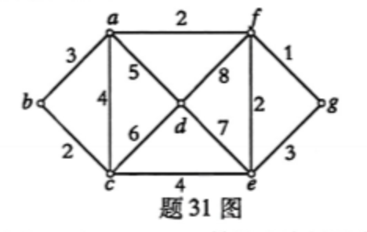

题干与选项默认显示，点开才能看到答案与解析，先自测再核对。
单选 15×2 = 30分填空 10×2 = 20分简答 7×5 = 35分证明 3×5 = 15分
| 序号 | 公式 | 根据 |
|---|---|---|
| 1 | R | 附加前提（CP） |
| 2 | ¬P∨¬R | 前提引入 |
| 3 | ¬P | 1、2 析取三段论（R⇒¬R假，故¬P） |
| 4 | P∨Q | 前提引入 |
| 5 | Q | 3、4 析取三段论 |
| 6 | Q→S | 前提引入 |
| 7 | S | 5、6 假言推理（MP） |
| 8 | R→S | 1、7 CP 规则 |
| 题号 | 1 | 2 | 3 | 4 | 5 | 6 | 7 | 8 | 9 | 10 | 11 | 12 | 13 | 14 | 15 |
|---|---|---|---|---|---|---|---|---|---|---|---|---|---|---|---|
| 答案 | A | D | C | B | B | B | B | C | A | D | C | D | C | A | A |